5 Measurement and Construct Validation
Measurement is one of the hardest parts of science and, when done poorly, has implications for the validity of our inferences (Flake et al., 2020; Gelman, 2015). The more you learn about a discipline or an applied problem, the deeper you’ll travel down the measurement rabbit hole. Debates about definitions and data are unavoidable. Even something as seemingly black and white as death is hard to measure completely, consistently, and correctly. Let’s take the COVID-19 pandemic as an example.
There are several challenges to counting the number of COVID-19 deaths globally since the start of the pandemic (Figure 5.1). First, some countries do not have robust civil registration and vital statistics systems that register all births, deaths, and causes of deaths (Whittaker et al., 2021; World Health Organization, 2021). Many people die without any record of having lived. Second, an unknown number of deaths that should be attributed to COVID-19 are not, which means we can only count “confirmed deaths” (Our World in Data, 2023a). In part this is due to limited testing capacity in many settings. It might also stem from deliberate misreporting for political or economic reasons.
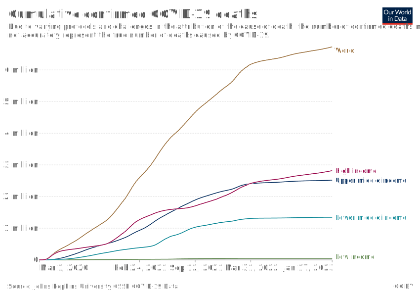
Watch this CDC explainer about how to certify deaths due to COVID-19.
There is also the challenge of defining what counts as a COVID-19 death. Did someone die “with” COVID-19 or “from” COVID-19. All cause of death determinations are judgment calls, and COVID-19 deaths are no different (CDC, 2020). When someone dies in the U.S., for instance, a physician, medical examiner, or coroner completes a death certificate and reports the death to a national registry.1 States are encouraged to use the Standardized Certificate of Death form which asks the certifier to list an immediate cause of death and any underlying causes that contributed to a person’s death.2 COVID-19 is often an underlying cause of death (e.g., COVID-19 ➝ pneumonia), and it’s up to the certifier to make this determination. This is not easy in many cases because COVID-19 can lead to a cascade of health problems in the short and long term (Boyle, 2021).
The list of challenges is long. Two more examples from the pandemic that you might observe in your own work: (1) Definitions change over time, making time-series data complicated; (2) Reporting is typically delayed, leading to changing totals that can fuel mistrust.
Given the challenges in counting all COVID-19 deaths, some scholars and policymakers prefer the metric of excess mortality, which represents the number of deaths from any cause that are above and beyond historical mortality trends for the period. Excess mortality counts confirmed COVID-19 deaths, ‘missing’ COVID-19 deaths, and deaths from any other causes that might be higher because of the pandemic. But the quantification of excess mortality has its own challenges (Our World in Data, 2023b). Among them is that excess mortality is estimated with statistical models, so differences in input data and modeling approaches can lead to different estimates (Hay et al., 2023). Figure 5.2 shows separate analyses by the World Health Organization and The Economist that both conclude excess mortality is far above the number of confirmed COVID-19 deaths globally, but differ by about 1 million in the central estimates.3
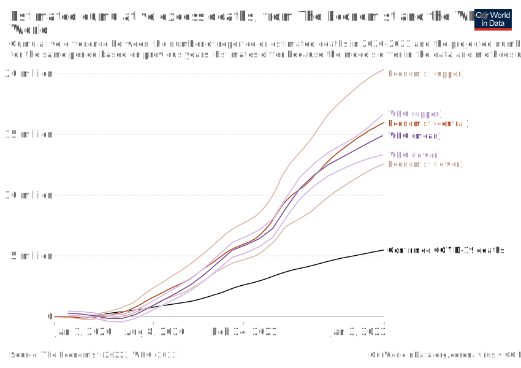
My goal here is not to depress you or make you question if we can ever truly measure anything. There is a time and place for a good existential crisis about science, but this chapter is not it (see Chapter X instead). Rather, my goal is to convince you of the importance of thinking hard about measurement, and to give you some frameworks for doing so.
5.1 Using Conceptual Models to Plan Study Measurement
It’s frustrating to get to the analysis phase and realize you are missing key variables. Ask me how I know. The best protection against this outcome is to plan your analysis upfront, including data simulation and mocking up tables and figures. It’s more effort in the study design phase, but not more effort overall.
The first step in planning study measurement is to decide what to measure. Consider starting this process by creating a conceptual model, such as a DAG or a theory of change. Conceptual models can help you identify what data you must collect or obtain to answer your research question.
DAG EXAMPLE
For instance, Barnard-Mayers et al. (2022) created the DAG shown in Figure 5.3 to plan a causal analysis of the effect of the human papillomavirus (HPV) vaccine on abnormal cervical cytology among girls with perinatal HIV infection. The process of creating the DAG helped the authors to (i) identify a sufficient adjustment set that closes all backdoor paths, and (ii) understand the limitations of the available dataset. With this DAG in hand, they realized that they lacked good data on sexual history, structural racism, and maternal history, leaving their proposed analysis susceptible to confounding. It was back to the drawing board.
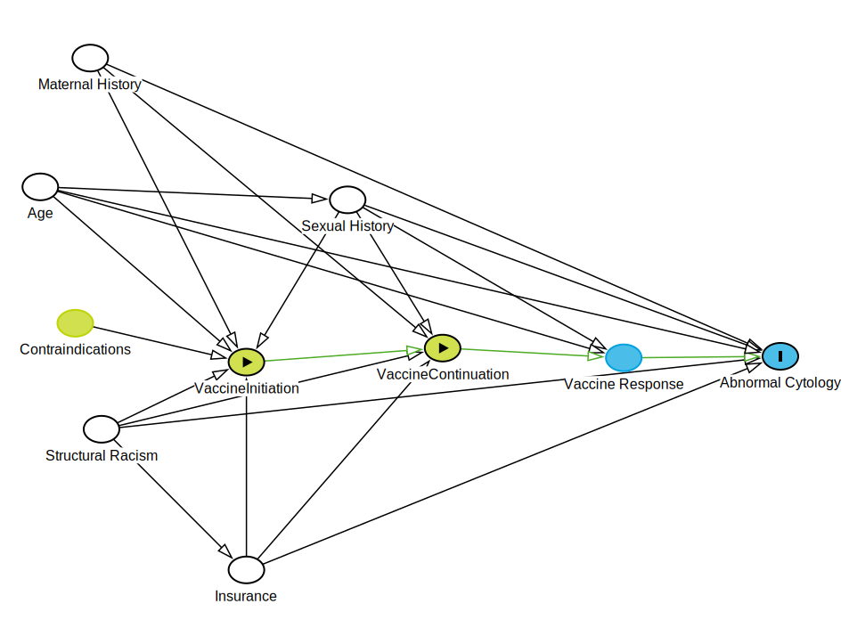
LOGIC MODEL EXAMPLE
For intervention studies, a theory of change or logic model can aid in measurement planning. To see this in practice, let’s return to the paper by Patel et al. (2017), introduced in Chapter X, that reports on the results of a randomized controlled trial in India to test the efficacy of a lay counsellor-delivered, brief psychological treatment for severe depression called the Healthy Activity Program, or HAP. I encourage you to pause here, read the article, and create your own logic model for the HAP intervention. Figure 5.4 displays my understanding of the HAP logic model.
For a refresher on conceptual models, see Chapter X.

Inputs
Inputs are the resources needed to implement a program. HAP inputs included money and the intervention curriculum (Anand, Arpita and Chowdhary, Neerja and Dimidjian, Sona and Patel, Vikram, 2013). A key part of any cost-effectiveness analysis is an accounting of expenditures (see Chapter X). On average, HAP cost $66 per person to deliver.
Activities
Watch Dr. Vikram Patel talk about task sharing to scale up the delivery of mental health services in low-income settings.
The main HAP activities were psychotherapy for patients and supervision of lay counselors. HAP was designed to be delivered in an individual, face-to-face format (telephone when necessary) over 6 to 8 weekly sessions each lasting 30 to 40 minutes (Chowdhary et al., 2016). Supervision consisted of weekly peer-led group supervision and twice monthly individual supervision.
In intervention studies like this, it’s important to determine if the intervention was delivered as intended. This is called treatment fidelity, and it’s a measure of how closely the actual implementation of a treatment or program reflects the intended design. The study authors measured fidelity in several ways, including external ratings of a randomly selected 10% of all intervention sessions. An expert not involved in the program listened to recorded sessions and compared session content against the HAP manual. They also had counselors document the duration of each session.
Outputs
Outputs are counts of activities. Patel et al. counted the number of sessions delivered to patients in the treatment arm, as well as the number of these patients who completed the program (69% had a planned discharge). Presumably they also tracked the number of counselors trained and supervision sessions conducted.4
Outcomes and impacts
The hypothesized outcome in the HAP study was a reduction in depression:
The two primary outcomes were depression severity assessed by the modified Beck Depression Inventory version II (BDI-II) and remission from depression as defined by a PHQ-9 score of less than 10, both assessed 3 months after enrollment.
The authors assumed that the long-term impact of reducing depression at scale would be improvements in quality of life for patients and their families, increased workforce productivity, and a reduction in costs to society.
FROM CONCEPTUAL MODEL TO STUDY MEASUREMENT
Both of these examples provide a solid foundation for measurement planning. If you or I were designing the HAP study, for instance, the example logic model would tell us that we need to collect or obtain data about the following:
- Expenditures
- Measures of treatment fidelity
- Counts of therapy sessions completed, supervision sessions held
- Measures of depression and several secondary outcomes
Generating this list is the first step. The next step involves a deep dive on the specifics of measurement. For instance, what is depression, and how can it be quantified?
5.2 Measurement Terminology
Table 5.1 lists four measurement terms to know.
| Term | Definition | Example |
|---|---|---|
| Construct | A characteristic, behavior, or phenomenon to be assessed and studied. Often cannot be measured directly (latent). | Depression |
| Outcome (or Endpoint) | The hypothesized result of an intervention, policy, program, or exposure. | Decreased depression severity |
| Indicator | Observable measures of outcomes or other study constructs. | Depression severity score |
| Instrument | The tools used to measure indicators. | A depression scale (questionnaire) made up of questions (items) about symptoms of depression that is used to calculate a severity score |
CONSTRUCTS
At the top of the list are study constructs. Constructs are the high-level characteristics, behaviors, or phenomena you investigate in a study. Constructs are the answer to the question, “What is your study about?”.
In the Patel et al. (2017) example, the key construct of interest was depression. Constructs like depression have no direct measure; there is not (yet) a blood test that indicates whether someone is depressed or “has depression”. Therefore, depression is an example of a latent construct. Many constructs in the social and behavioral sciences are latent constructs—such as empowerment, corruption, democracy.
OUTCOMES AND ENDPOINTS
Outcomes (or endpoints) are the specific aspects of a construct that you are investigating. In intervention research, program evaluation, and causal inference more generally, outcomes are often framed as the hypothesized result of an intervention, policy, program, or exposure. In a theory of change or logic model, outcomes take on the language of change: increases and decreases.
In the clinical trial literature, study targets are also called endpoints. Death. Survival. Time to disease onset. Blood pressure. Tumor shrinkage. These are all endpoints you might seek to measure after offering some treatment (e.g., an experimental drug).
You’ll also see outcomes and endpoints referred to as dependent variables, response variables, 𝑌, or left-hand side variables (referring to an equation).
Most studies are designed to generate evidence about one or two primary outcomes linked directly to the main study objective. In the HAP study, Patel et al. (2017) hypothesized two primary outcomes: a reduction in severe depression and a reduction in the prevalence of depression.
Secondary outcomes may be registered, investigated, and reported as well, but these analyses will often be framed as exploratory in nature if the study design is not ideal for measuring these additional outcomes. Patel et al. (2017) specified several secondary outcomes, including increases in behavioural activation and reductions in disability, total days unable to work, suicidal thoughts or attempts, intimate partner violence, and resource use and costs of illness (Patel et al., 2014).
INDICATORS AND INSTRUMENTS
Indicators are observable metrics of outcomes, endpoints, or other study constructs.
The language of qualitative studies is a bit different. These studies emphasize study constructs, but not indicators or measures. Quantification is not typically the goal.
Indicators and instruments go together. Instruments are the tools used to measure indicators. Instruments can take many forms, including surveys, questionnaires, environmental sensors, anthropometric measures, blood tests, imaging, satellite imagery, and the list goes on.
Returning to the HAP study, Patel et al. (2017) hypothesized that the intervention would reduce severe depression and the prevalence of depression (the primary outcomes). Table 5.2 summarizes how each was operationalized and measured.
| Outcome | Indicator | Instrument |
|---|---|---|
| Depression severity | a continuous measure of severity where higher scores suggest someone is experiencing more severe symptoms of depression | assessed with the Beck Depression Inventory, version II |
| Depression prevalence | a binary indicator of the presence of depression based on a person’s depression score relative to a reference cutoff score; < 10 on the Patient Health Questionnaire-9) | assessed with the Patient Health Questionnaire-9 |
The HAP study instruments are reproduced in Figure 5.5. The authors measured depression with two instruments: (i) the 21-item Beck Depression Inventory version II (Beck et al., 1996); and (ii) the 9-item Patient Health Questionnaire-9 (Kroenke et al., 2002).
Responses to each BDI-II item are scored on a scale of 0 to 3 and summed to create an overall depression severity score that can range from 0 to 63, where higher scores indicate more severe depression. PHQ-9 responses are also scored on a scale of 0 to 3 based on the frequency of symptoms and summed to create a total score with a possible range of 0 to 27. Based on prior clinical research, the HAP authors defined the cutoff for depression as a score of at least 10 on the PHQ-9.
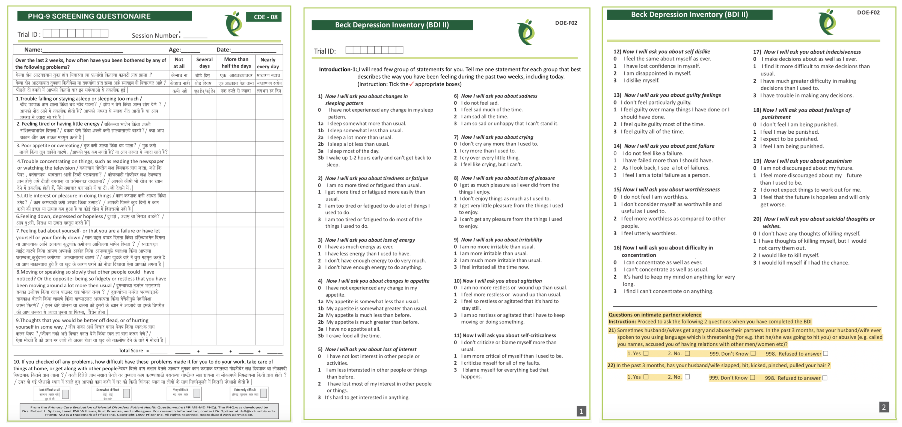
5.3 What Makes a Good Indicator?
When you select and define indicators of outcomes and other key variables, this is called operationalizing your constructs. Operationalization a critical part of measurement planning. When you finish the study and present your findings, one of the first things colleagues will ask is, “How did you define and measure your outcome?” Hopefully you can say that your indicators are DREAMY™.
SMART is another acronym worth knowing. SMART indicators are Specific, Measurable, Achievable, Relevant, and Time-Bound.
| Defined | clearly specified |
| Relevant | related to the construct |
| Expedient | feasible to obtain |
| Accurate | valid measure of construct |
| Measurable | able to be quantified |
| customarY | recognized standard |
DEFINED
It’s important to clearly specify and define all study variables, especially the indicators of primary outcomes. This is a basic requirement that enables a reader to critically appraise the work, and it serves as a building block for future replication attempts.
Patel et al. (2017) defined two indicators of depression:
- Depression severity: BDI-II total score measured at 3 months after the treatment arm completed the intervention
- Depression prevalence: the proportion of participants scoring 10 or higher on the PHQ-9 total score measured at 3 months post intervention
RELEVANT
Indicators should be relevant to the construct of interest. For instance, scores on the BDI-II and PHQ-9 are clearly measures of depression. An example of an irrelevant indicator would be a total score on the Beck Anxiety Inventory, a separate measure of anxiety. While anxiety and depression are often comorbid, anxiety is a distinct construct.
EXPEDIENT
It should be feasible to collect data on the indicator given a specific set of resource constraints. Asking participants to complete a 21-item questionnaire and a 9-item questionnaire, as in the HAP study, does not represent a large burden on study staff or participants. However, collecting and analyzing biological samples (e.g., hair, saliva, or blood) might be too difficult in some settings.
ACCURATE
Accurate is another word for “valid”. Indicators must be valid measures of study constructs (a topic discussed extensively later in this chapter). When deciding on indicators and instruments, the HAP authors had to ask themselves whether scores on the BDI-II and PHQ-9 distinguish between depressed and non-depressed people in their target population. The authors cited their own previous work to support the decision to use these instruments (Patel et al., 2008).
MEASUREABLE
Indicators must be quantifiable. Psychological constructs like depression are often measured using questionnaires like the BDI-II and the PHQ-9. Other constructs require more creativity. For instance, how would you measure government corruption? Asking officials to tell on themselves isn’t likely to yield a helpful answer. Olken (2005) took a different approach in Indonesia—they dug core samples of newly built roads to estimate the true construction costs. The authors then compared cost estimates based on these samples to the government’s reported construction expenditures to construct a measure of corruption (reported expenditures > estimated costs).
CUSTOMARY
In general, it’s good advice to use standard indicators, follow existing approaches, and adopt instruments that have already been established in a research field. There are several ways to do this.
Sometimes the status quo stinks and you’ll want to conduct a study to overcome the limitations of the standard methods.
One way is to read the literature and find articles that measure your target constructs. For example, if you’re planning an impact evaluation of a microfinance program on poverty reduction and wish to publish the results in an economics journal, start by reading highly cited work by other economists to understand current best practices. How do these scholars define and measure outcomes like income, consumption, and wealth?
Systematic reviews and methods papers are also good resources for learning about measurement. For instance, Karyotaki et al. (2022) critically appraised several task sharing mental health interventions, including HAP. Their review is a resource for for understanding how depression is operationalized and measured across studies. Larsen et al. (2021) evaluated nine commonly used depression screening tools in sub-Saharan Africa on the basis of their diagnostic performance, cultural adaptation, and ease of implementation. If you wanted to measure depression in a target population in sub-Saharan Africa, their paper should be high on your reading list.
A third approach is to search for nationally or internationally recognized standards. If studying population health, for instance, a good source of customary indicators is the World Health Organization’s Global Reference List of the 100 core health indicators (WHO, 2018). Another good source of customary indicators for population health is the United Nations Sustainable Development Goals (SDG) metadata repository, which includes 231 unique indicators to measure 169 targets for 17 goals (United Nations, 2023).
5.4 Constructing Indicators
Some indicators are based on a single measurement and require only a definition. For instance, a hemoglobin level of less than 7.0 g/dl is an indicator of severe anemia. If you were evaluating the impact of a new diet on severe anemia, you would need only to record the result of a blood test (instrument). Lucky you. Most indicators are more complex and must be constructed.
NUMERATORS AND DENOMINATORS
Population-level global health indicators often involve numerators and denominators. For instance, the WHO defines the maternal mortality ratio as (World Health Organization):
The denominator for the maternal mortality rate is the number of women of reproductive age.
the number of maternal deaths during a given time period per 100,000 live births during the same time period
Constructing this indicator requires data on the counts of maternal deaths and live births. Each has a precise definition.
| Maternal deaths | The annual number of female deaths from any cause related to or aggravated by pregnancy or its management (excluding accidental or incidental causes) during pregnancy and childbirth or within 42 days of termination of pregnancy, irrespective of the duration and site of the pregnancy. |
| Live births | The complete expulsion or extraction from its mother of a product of conception, irrespective of the duration of the pregnancy, which, after such separation, breathes or shows any other evidence of life such as beating of the heart, pulsation of the umbilical cord, or definite movement of voluntary muscles, whether or not the umbilical cord has been cut or the placenta is attached |
COMPOSITE INDICATORS
Latent (unobservable) constructs like empowerment, quality of life, and depression, and some manifest (observable) constructs like wealth, are often measured with multiple items on surveys or questionnaires and then combined into indexes or scales.
The terms index and scale are often used interchangeably, but they are not quite synonyms. While they share in common the fact that multiple items or observations go into their construction, making them composite measures or composite indicators, the method for and purpose of combining these items or observations are distinct (see Figure 5.6).
In an index, indicators give rise to the construct that is being measured. For example, a household’s wealth is determined by the assets it owns (e.g., livestock, floor quality). Conversely, in a scale, the indicators exist because of the construct. Depression manifests in symptoms such as a loss of appetite.

Indexes
Watch this introduction to the Equity Tool, a wealth index alternative.
Indexes combine items into an overall composite, often without concern for how the individual items relate to each other. For instance, the Dow Jones Industrial Average is a stock-market index that represents a scaled average of stock prices of 30 major U.S. companies such as Disney and McDonald’s. Companies with larger share prices have more influence on the index. The Dow Jones is a popular indicator of market strength and is constantly monitored during trading hours.
An index popular in the global health field is the wealth index. The wealth index uses household survey data on assets as a measure of household economic status (Rutstein et al., 2004). The data come from national surveys conducted by the Demographic and Health Surveys (DHS) Program (DHS, n.d.). Asset variables include individual and household assets (e.g., phone, television, car), land ownership, and dwelling characteristics, such as water and sanitation facilities, housing materials (i.e., wall, floor, roof), persons sleeping per room, and cooking facilities. A household gets an overall score that is the sum of the weights for having (or not having) each asset.
A common way to present wealth index scores is to divide the sample distribution into quintiles. Each household in the sample falls into 1 of 5 wealth quintiles reflecting their economic status relative to the sample, from poorest (1st quintile) to richest (5th quintile).
Watch Dr. Selim Jahan, former lead author of the Human Development Report, discuss the history of the Human Development Index.
Another widely known index among global health practitioners is the Human Development Index, or HDI (UNDP, n.d.). It combines country-level data on three dimensions: (i) life expectancy at birth; (ii) expected years of schooling for kids entering school and mean years of schooling completed by adults; and (iii) Gross National Income per capita. The HDI is produced by the United Nations Development Program.

Scales
Scales also combine items into an overall composite, but unlike the components of most indexes, scale items should be intercorrelated because they stem from a common, latent cause. For instance, the BDI-II used in the HAP trial was designed to measure the construct of depression with 21 related items that ask people to report on their experience of common problems. Figure 5.8 shows how these items were correlated in the Patel et al. (2017) data.6
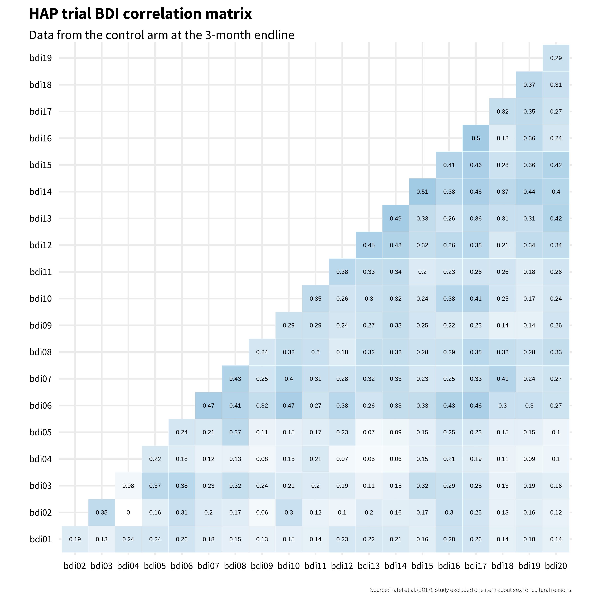
This heatmap visualizes data from participants in the control arm, collected three months after the treatment arm completed the HAP program. These correlations can range from -1 to 1, and most item pairs show moderately sized, positive correlations in the 0.2 to 0.3 range. An exception on the low side is bdi02 (tiredness) and bdi04 (changes in appetite). With a correlation coefficient of 0, it seems like there is no association between tiredness and changes in appetite. bdi04 (changes in appetite) also has a few other small correlations with other items, which could suggest that, in this population, changes in appetite often do not manifest alongside other symptoms of depression.
Does this mean that bdi04 (changes in appetite) should have been excluded from the outcome measure? Possibly. I’ll return to this question later in this chapter.
Index and Scale Construction
A key decision in creating composite indicators like the wealth index and the BDI-II scale score is how to weight the individual components. In the case of the wealth index, should owning a car be given the same weight as owning a phone in the construction of wealth? When it comes to measuring depression severity, should feeling sad be given the same weight as feeling suicidal?
The answer is ‘no’ for the wealth index. The wealth index is constructed using relative weights derived from a data reduction technique called principal component analysis, or PCA, in which indicators are standardized (i.e., transformed into z-scores) so that they each have a mean of 0 and a standard deviation of 1. A principal component is a linear combination of the original indicators; thus, every indicator (e.g., yes/no response to owning a phone) has a loading factor that represents the correlation between the individual indicator and the principal component. The first principal component always explains the most variance, so the factor loadings on the first principal component are assigned as the weights for each asset in the index. A household gets an overall score that is the sum of the weights for having (or not having) each asset.
Visit the DHS Program’s website for country files and detailed instructions to construct the wealth index.
Let’s look at an example. Figure 5.9 shows how one item—a household’s water source—contributes to the construction of the overall index. On the left is the wording of the survey item asked to each household in the India 2015-15 DHS Survey. On the right are the PCA results provided by the DHS Program. If a survey respondent said their household has water piped into its dwelling, the household’s wealth index score would be—in part, this is only one item—the sum of the values for having and not having each type of water source. Scan the values and you’ll see that safer sources of water such as piped water into the dwelling get higher scores (0.102) compared to possibly contaminated sources such as surface water from a lake or stream (-0.055). These relative weights are summed to make the overall wealth index score for each household.
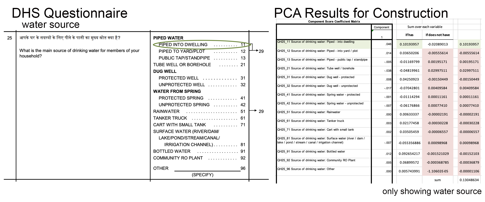
In contrast, the BDI-II—and many scales like it—use equal weighting (or unit weighting). Responses to each BDI-II item are scored on a scale of 0 to 3 and summed to create an overall depression severity score that can range from 0 to 63. Figure 5.10 shows data from four people in the HAP study. Each item contributes equally to the sum score (bdi_total).
The possible range is 0 to 60 in the case of Patel et al. (2017) because they purposively omitted one item.
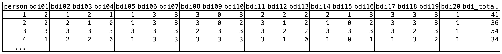
An alternative construction method for scales like the BDI-II is optimal weighting with a congeneric model (McNeish et al., 2020). In this method, items more closely related to the construct are weighted more heavily in the construction of the scale score. We can do this in R using a package for confirmatory factor analysis such as the {lavaan} package (Rosseel, 2012).
# specify the model
model <- '
total_factor =~ bdi01 + bdi02 + bdi03 + bdi04 + bdi05 +
bdi06 + bdi07 + bdi08 + bdi09 + bdi10 +
bdi11 + bdi12 + bdi13 + bdi14 + bdi15 +
bdi16 + bdi17 + bdi18 + bdi19 + bdi20
'
# fit the model
fit <- lavaan::cfa(
model, data = df, ordered = TRUE, std.lv = TRUE
)
# plot a path diagram with model coefficients
lavaanPlot::lavaanPlot(
model = fit,
node_options = list(shape = "box"),
edge_options = list(color = "grey"),
labels = list(total_factor = "Depression Severity"),
coefs = TRUE
)Figure 5.11 shows a path diagram of a congeneric factor model for the BDI-II data from the HAP trial control arm at the 3-month endline. The loadings from the latent depression severity score are uniquely estimated for each item. The items bdi14 (feeling like a failure) and bdi17 (indecisiveness) have the highest loading of 0.76, meaning these items are most closely related to the construct of depression severity. Thus, these items contribute the most to the overall factor score. bdi04 (changes in appetite) has the weakest relationship to the construct and contributes the least to the factor score. (Remember, in the commonly used equal weighting approach, these items would contribute equally.)
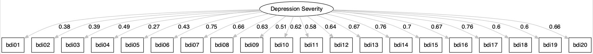
Does it matter which construction method you choose, equal weighting sum scores or optimal weighting factor scores? McNeish et al. (2020) argue that it can. Figure 5.12 demonstrates that two people with the same sum score can have substantially different factor scores.
Higher sum scores and higher factor scores represent more severe depression. The factor score is on a standardized Z-scale, so negative numbers indicate below average severity.
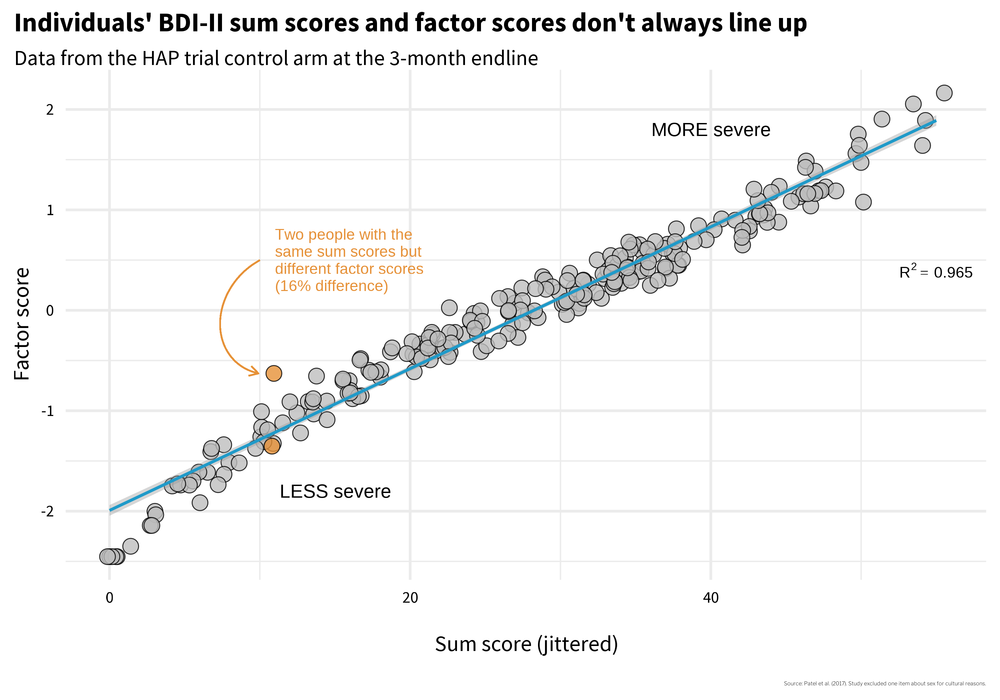
Two people with identical sum scores but different factor scores are highlighted in orange in Figure 5.12. In Figure 5.13 I reproduce their responses to each BDI item. Person A endorsed several items with the highest loadings, which helps to explain their more severe factor score. Person B endorsed fewer items overall, but endorsed them strongly.
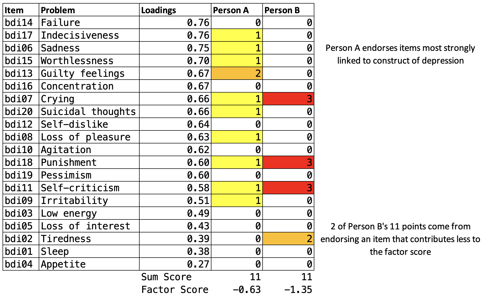
So do you think Person A and B have the same level of depression severity, as suggested by equivalent sum scores of 11? Or are they experiencing differing levels of severity as suggested by the factor scores? If you said different, you might prefer to construct optimally weighted factor scores, especially if you are using the score as an outcome indicator in a trial.
In a clinical setting the ease of calculating sum scores might outweigh other considerations.
McNeish et al. (2020) make some helpful suggestions that you can revisit when you are faced a decision about how to construct scale scores. For now, I think a good takeaway is that measurement is complicated and we should think hard about what numbers mean and how scores are constructed. The next two sections will help you do just that.
5.5 Construct Validation
This Open Science Framework project website hosts a comprehensive reading list on study measurement.
Construct validation is the process of establishing that the numbers we generate with a method of measurement actually represent the idea—the construct—that we wish to measure (Cronbach et al., 1955). Using the BDI-II example, where sum scale scores can range from 0 to 63, validating this construct means establishing that higher numbers correspond with greater depression severity, or that scores above a certain threshold, such as 29 (out of 63), correctly classify someone as having “severe depression”. If our numbers don’t mean what we think they mean, our analyses don’t either.
You might be thinking that construct validation is not a top concern in your work because you, a principled scientist, are using “validated” scales. If so, you’d be wrong. Validity is not a property of an instrument. Flake et al. (2022) make this point clearly:
Thus, validity is not a binary property of an instrument, but instead a judgment made about the score interpretation based on a body of accumulating evidence that should continue to amass whenever the instrument is in use. Accordingly, ongoing validation is necessary because the same instrument can be used in different contexts or for different purposes and evidence that the interpretation of scores generalizes to those new contexts is needed.
I won’t argue that you must always start from scratch to validate the instruments you select, but it’s important to think critically about why you believe an instrument will produce valid results in your context. For instance, if you are using an instrument originally validated with a sample of 200 white women in one small city in America, what gives you confidence that the numbers produced carry the same meaning in rural India?
PHASES OF CONSTRUCT VALIDATION
Loevinger (1957) outlined three phases of construct validation: substantive, structural, and external. The goal of the substantive phase is to ensure that the content of the instrument is comprehensive and presented in a manner that makes sense to people. Once this phase is satisfied, you move onto the structural phase where you gather data and analyze the psychometric properties of the instrument and its items. If acceptable, you proceed to the external phase where scores generated by the instrument are compared to other instruments or criteria. Table 5.3 provides examples of validity evidence for each phase (inspired by Flake et al. (2017)).
| Phase | Validity Evidence | Question | Examples |
|---|---|---|---|
| Substantive | Content validity | What topics should be included in the instrument based on theory and prior work? | Complete a literature review, talk with experts, conduct focus groups to explore local idioms |
| Item development | How should the construct be assessed? | Conduct cognitive interviewing to ensure local understanding of item wording and response options | |
| Structural | Item analysis | Are the instrument items working as intended? | Analyze patterns of responding, select items that discriminate between cases and non-cases |
| Factor analysis | How can the observed variables be summarized or represented by a smaller number of unobserved variables (factors)? | Conduct exploratory and/or confirmatory factor analysis | |
| Reliability | Are responses to a set of supposedly related items consistent within people and over time? | Examine internal consistency and test-retest correlations for evidence of stability | |
| Measurement invariance | Does the instrument function equivalently across different groups or conditions? | Conduct multiple group factor analysis, item response theory analysis | |
| External | Criterion validity | How well does the instrument predict or correlate with an external criterion or outcome of interest? | Establish concurrent validity, predictive/diagnostic validity |
| Construct validity | How well does the instrument measure the intended construct? | Establish convergent/discriminant/known groups validity |
Construct Validation Phase 1: Substantive
If adopting or adapting an existing instrument, you can still evaluate whether the instrument has evidence of content validity for your study setting and target population.
The first phase of developing a new instrument is to identify all of the relevant domains (the content) needed to fully assess the construct of interest. The process often starts with a review of the literature, conversations with experts, and potentially focus groups with members of the target population.
For instance, my colleagues and I conducted a study in rural Kenya where we examined how people understood depression in the context of pregnancy and childbirth (Green et al., 2018). We started by reviewing the scholarly literature on how depression was assessed in Kenya and elsewhere. Then we convened groups of women in our target population and asked them to describe what observable features characterize depression (sadness, or huzuni, in Swahili) during the perinatal period. Working with each group, we co-examined the overlap (and lack thereof) of their ideas and existing depression screening tools (see Figure 5.14). A group of Kenyan mental health professionals then gave feedback on the results based on their local clinical expertise.
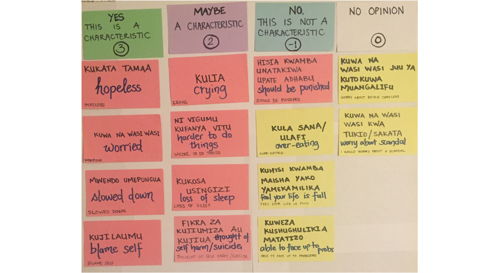
Once you know the domains to include, you can proceed to create items that assess these domains. Your instrument will have evidence of content validity if you can demonstrate that it assesses all of the conceptually or theoretically relevant domains and excludes unrelated content.
Check out this helpful “how to” guide for cognitive interviewing.
As part of this process, it’s important to ensure that members of your target population understand the meaning of each item and the response scale. In the Kenya study, we used a technique called cognitive interviewing whereby we asked members of the target population to describe the meaning of each item and suggest improvements.
Construct Validation Phase 2: Structural
The structural phase comes after you collect pilot data from a sample drawn from your target population. In this phase, you’ll quantitatively evaluate how people respond to the items, identify items that appear to best represent the latent construct(s), and examine whether the items are measured consistently and equivalently across groups.
Item Analysis
A common initial exploratory data analysis practice is to plot the response distributions of each item. If you ask people to rate their agreement with a statement like, “I feel sad”, and if 100% of people in your sample respond “strongly agree”, the item has zero variance. When all or nearly all of your sample responds the same way to an item, that item tells you nothing useful. The appropriate next step is to drop the item or conduct additional cognitive interviewing to modify the item in a way that will elicit variation in responses.
You might decide to keep an item with low variability if it’s a critical item for clinical detection like suicidal ideation.
If you have data that enable you to plot response distributions by group, you can also examine the extent to which items distinguish between groups. Figure 5.15 shows a hypothetical example where 100 people responded to three items, each measured on a 4-point scale from “Never” to “Often”.
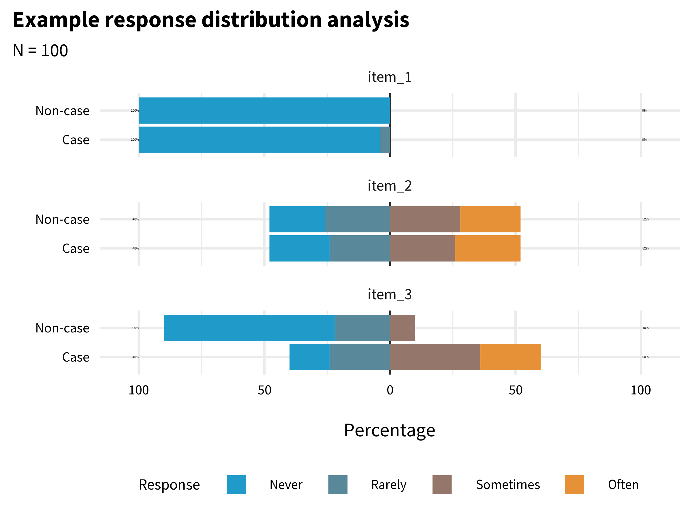
item_1 has very little variability. Almost everyone responded “Never”. This item does not tell us much, and I might decide to drop or improve it. item_2 has more variability, but it does not distinguish between cases and non-cases. In combination with other variables it might be useful, so I might decide to keep it unless I need to trim the overall length of the questionnaire. item_3 looks the most promising. It elicits variability in responses, and a larger proportion of the Cases group endorsed the item.
Factor Analysis
Factor analysis is a statistical method that helps us understand hidden patterns and relationships within a large set of data. It looks for commonalities among different variables and groups them into smaller, meaningful categories called factors. By doing this, factor analysis simplifies complex data and allows us to uncover the underlying dimensions or concepts that are influencing the observed patterns.
There are two main types of factor analysis: exploratory factor analysis, or EFA, and confirmatory factor analysis, or CFA. EFA is used when we have little prior knowledge about the underlying structure of the variables. It helps in identifying the number of factors and the pattern of relationships among variables.
On the other hand, CFA is conducted when we have a pre-specified hypothesis or theory about the factor structure and seeks to confirm whether the observed data align with the proposed model. CFA tests the fit of the predetermined model and assesses the validity of the measurement instrument.
Flora et al. (2017) discuss when you might use EFA vs CFA:
Researchers developing an entirely new scale should use EFA to examine the dimensionality of the items…CFA should be used when researchers have strong a priori hypotheses about the factor pattern underlying a set of observed variables.
EFA Example
To get a glimpse of what this means, let’s imagine that, as members of the HAP study team, we created the BDI-II items from scratch and wanted to examine the dimensionality of the items. One way to do this is to use an R package like {lavaan} to fit EFA models with 1, 2, or 3 factors.
lavaan::efa(data = df,
nfactors = 1:3,
rotation = "oblimin",
estimator = "WLSMV",
ordered = TRUE)Table 5.4 displays the factor loadings for the 2-factor model. Factor loadings represent the strength and direction of the relationship between observed variables (i.e., the BDI-II items) and the underlying factors. Think of factor loadings as indicators of how closely each variable is associated with a particular factor. Higher positive factor loadings suggest a strong positive relationship, indicating that the variable is more representative of that factor, while lower or negative factor loadings indicate a weaker or opposite association. These loadings help us understand which variables are most important in measuring a specific factor and contribute to our overall understanding of the underlying structure of the data.
| Factor loadings | |||
| item | label | f1 | f2 |
|---|---|---|---|
| bdi03 | Low energy | 0.71 | |
| bdi06 | Sadness | 0.67 | |
| bdi05 | Loss of interest | 0.66 | |
| bdi02 | Tiredness | 0.54 | |
| bdi10 | Agitation | 0.48 | |
| bdi16 | Concentration | 0.46 | |
| bdi08 | Loss of pleasure | 0.45 | |
| bdi07 | Crying | 0.43 | |
| bdi14 | Failure | 0.89 | |
| bdi13 | Guilty feelings | 0.78 | |
| bdi20 | Suicidal thoughts | 0.73 | |
| bdi15 | Worthlessness | 0.62 | |
| bdi12 | Self-dislike | 0.6 | |
| bdi19 | Pessimism | 0.57 | |
| bdi18 | Punishment | 0.55 | |
| bdi17 | Indecisiveness | 0.49 | |
| bdi11 | Self-criticism | 0.45 | |
| bdi01 | Sleep | ||
| bdi04 | Appetite | ||
| bdi09 | Irritability | ||
| Loadings less than 0.40 (absolute value) are not presented. | |||
What we see is a cluster of items that load strongly on factor 1, a cluster of items that load strongly on factor 2, and a few items such as bdi04 (appetite) that are not strongly associated with either factor. The software does not know how to label these factors qualitatively, so it just names them f1 and f2. It’s up to us to examine the pattern of loadings and determine whether the factors have a clear meaning. My sense is that f1 captures the affective dimension of depression (e.g., sadness, crying), whereas f2 is about negative cognition (e.g., guilty feelings, self-dislike).
But is a 2-factor model the best way to represent the data? There are many ways we could try to answer this question, but unfortunately there is no consensus about what approach is best. In the code below that produces Figure 5.16, I use the Method Agreement procedure as implemented in the {parameters} package which (currently) looks across 19 different approaches and tallies the votes for the number of factors to extract. The winner is a 1-factor model.
efa_n_factors <- parameters::n_factors(df)
library(see)
plot(efa_n_factors)
CFA Example
Remember that for this EFA example, we fancied ourselves as HAP team members who created the BDI-II items from scratch. In reality, of course, the BDI-II has been around for a long time, and CFA is probably a better choice for our situation. While many research groups have proposed multi-factor solutions for the BDI-II (Beck et al., 1988), we know the instrument is scored as a 1-factor model (consistent with our EFA results, yay!). To demonstrate a strength of CFA, however, let’s compare two different 1-factor models: a parallel model where items are weighted equally (feeling sad contributes the same as feeling suicidal) and a congeneric model where items are optimally weighted.
# congeneric model (optimally weighted)
# https://osf.io/8fzj4
model_1f_congeneric <- '
# all loadings are uniquely estimated
# first loading is set to 1 by default and must be freed
total_factor =~ NA*bdi01 + bdi02 + bdi03 + bdi04 + bdi05 +
bdi06 + bdi07 + bdi08 + bdi09 + bdi10 +
bdi11 + bdi12 + bdi13 + bdi14 + bdi15 +
bdi16 + bdi17 + bdi18 + bdi19 + bdi20
# constrain factor variance to 1#
total_factor~~1*total_factor
'
fit_1f_congeneric <- lavaan::sem(
model_1f_congeneric, data = df, ordered = TRUE
)
# parallel model (equally weighted)
# https://osf.io/2gzty
model_1f_parallel <- '
# fix all factor loadings to 1
total_factor =~ 1*bdi01 + 1*bdi02 + 1*bdi03 + 1*bdi04 + 1*bdi05 +
1*bdi06 + 1*bdi07 + 1*bdi08 + 1*bdi09 + 1*bdi10 +
1*bdi11 + 1*bdi12 + 1*bdi13 + 1*bdi14 + 1*bdi15 +
1*bdi16 + 1*bdi17 + 1*bdi18 + 1*bdi19 + 1*bdi20
# constrain all residual variances to same value
bdi01~~theta*bdi01
bdi02~~theta*bdi02
bdi03~~theta*bdi03
bdi04~~theta*bdi04
bdi05~~theta*bdi05
bdi06~~theta*bdi06
bdi07~~theta*bdi07
bdi08~~theta*bdi08
bdi09~~theta*bdi09
bdi10~~theta*bdi10
bdi11~~theta*bdi11
bdi12~~theta*bdi12
bdi13~~theta*bdi13
bdi14~~theta*bdi14
bdi15~~theta*bdi15
bdi16~~theta*bdi16
bdi17~~theta*bdi17
bdi18~~theta*bdi18
bdi19~~theta*bdi19
bdi20~~theta*bdi20
'
fit_1f_parallel <- lavaan::sem(
model_1f_parallel, data = df, ordered = TRUE
)Table 5.5 shows different metrics for evaluating the fit of the models to the data. Evaluating model fit is an advanced topic, so I’ll simply note that the parallel (equally weighted) model fit shows mixed results. The Comparative Fit Index (CFI) value is greater than 0.90 as recommended, but the root mean square error of approximation value (RMSEA), which should be low, is above the commonly used cutoff of 0.08. The congeneric (optimally weighted) model looks better based on the same fit indices. The likelihood ratio test (not shown) confirms this.
| Fit indices | ||||||
| model | npar | chisq | cfi | tli | agfi | rmsea |
|---|---|---|---|---|---|---|
| parallel (equally weighted) | 62 | 704.5171 | 0.9013458 | 0.9002963 | 0.8709023 | 0.10812584 |
| congeneric (optimally weighted) | 80 | 263.2575 | 0.9821879 | 0.9800924 | 0.9466522 | 0.04831517 |
Reliability
Classical test theory is a framework for evaluating and understanding the characteristics of tests and assessments, such as the BDI-II questionnaire. According to classical test theory, every observed score consists of two parts: the true score and measurement error. The true score represents person’s actual ability or trait being measured (e.g., depression severity), while measurement error includes various factors that can introduce variability into the observed scores.
Measurement error can be random or systematic. Random error is noise—unpredictable and inconsistent variations that occur in measurements. Even the most precise physics instruments have some random error, whether from human error or equipment limitations. When random error is high—that is, when the noise is greater than the signal—measurements are unreliable because they are inconsistent. Reliability refers to the consistency of measurements.
Systematic error, on the other hand, is bias, and bias in measurement takes us away from the true score in a particular direction. Systematic error results in artificially inflated or deflated scores. Measurement bias contributes to unreliability, but it’s main victim is validity.
A common teaching example is that a bathroom scale is valid if it correctly measures your weight, and is reliable if it gives you the same reading if you step off and back on. Validity and reliability work together to ensure sound measurement, but as you can see, they are independent concepts. A scale that consistently tells you, someone who weighs 65kg, that you weigh 80kg (±0.10kg) demonstrates reliable measurement, but not valid measurement. Consistency is reliability, regardless of being right or wrong.
For an in-depth look at reliability, see this chapter by William Revelle.
There is no one test of an instrument’s reliability because variation in measurement can come from many different sources: items, time, raters, form, etc. Therefore, we can assess different aspects of reliability of measurement, including test-retest reliability, internal consistency reliability, and inter-rater reliability, to name a few.
Reliability: Test-retest
An instrument is said to exhibit good test-retest reliability if it maintains roughly the same ordering between people when the instrument is repeatedly administered to the same individuals under the same conditions. Often this is benchmarked as a correlation of at least 0.70.
When I first learned about test-retest reliability, I thought it meant that an instrument would return the same answer from one assessment to the next in the absence of change—that perfect reliability meant identical scores at time 1 and time 2. That’s not quite right though. Two sets of scores obtained from a group of people can be perfectly reliable, meaning they preserve the group order perfectly and have a correlation coefficient of 1.0, but also have zero agreement. I created Figure 5.17 to make this clear.
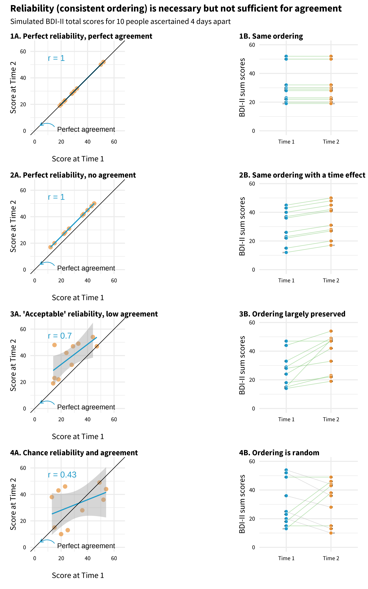
Each panel plots mock BDI-II sum scores for 10 people measured four days apart. An individual’s point falls on the diagonal line if they have identical scores at time 1 and time 2.
Panel 1 illustrates perfect reliability and perfect agreement. The correlation coefficient is 1.0, and the ordering of people is perfectly preserved. Now look at Panel 2. This is also a scenario with perfect reliability; the ordering is preserved, but no one has identical scores at time 1 and time 2. There is zero agreement because there is a time effect!
Panel 3 is more typical of what researchers present in papers claiming an instrument is reliable. In this example, there is very little agreement in scores from time 1 to time 2, but for the most part the ordering of depression severity is unchanged among the sample.
Finally, in Panel 4 I simulated random values for time 1 and time 2, so any agreement is by chance. Reliability is low (0.43), and the ordering is not preserved. If your instrument shows evidence of low test-retest reliability like this over a short period where you expect stable scores, you have to wonder what the instrument is measuring.
Reliability: Internal consistency
Repeating administrations of an instrument with the same people to assess test-retest reliability is not always feasible, so in 1951 the educational psychologist Lee Cronbach came up with a way to measure what he called internal consistency reliability in a single administration. Rather than measuring the correlation in scale scores at multiple time points, internal consistency reliability evaluates how closely the scale items ascertained in a single administration are related to each other. If the items are not highly correlated with each other, it’s unlikely that they are measuring the same latent construct. In other words, the items are not internally consistent when it comes to measuring the construct.
The most commonly used index of internal consistency reliability is Cronbach’s alpha, but it has many detractors (McNeish, 2018). It’s still widely used because it’s easy to calculate with any statistics software. The basic approach is to divide the mean covariance between items by the mean item variance:
\[\alpha = (N*\bar{c}) / (\bar{v}+(N−1)*\bar{c})\]
where 𝑁 equals the number of items, \(\bar{c}\) is the mean covariance between items, and \(\bar{v}\) is the mean item variance. This means that Cronbach’s alpha quantifies how much of the overall variability is due to the relationships between the items. It can range from 0 to 1 where 1 indicates perfect reliability.
Use the Kuder-Richardson 20 formula (KR20) if you have binary variables.
Before we calculate Cronbach’s alpha, let’s glimpse the HAP data. As a reminder, this data comes from participants in the control arm, collected three months after the treatment arm completed the HAP program.
Refer to Figure 5.8 to see a visualization of the item correlation matrix.
# A tibble: 236 × 20
bdi01 bdi02 bdi03 bdi04 bdi05 bdi06 bdi07 bdi08 bdi09 bdi10 bdi11 bdi12 bdi13
<dbl> <dbl> <dbl> <dbl> <dbl> <dbl> <dbl> <dbl> <dbl> <dbl> <dbl> <dbl> <dbl>
1 2 1 2 1 1 3 3 3 0 3 2 2 2
2 2 2 1 0 1 3 3 3 0 2 3 1 2
3 3 3 3 3 3 3 3 2 3 3 3 2 2
4 1 2 2 0 1 3 3 3 3 3 3 1 0
5 1 3 3 1 3 3 3 3 3 3 3 2 2
6 2 3 2 1 1 1 3 2 1 2 3 2 2
7 2 2 3 2 3 3 3 3 3 3 3 3 3
8 3 3 3 2 2 3 0 2 3 2 3 1 3
9 2 3 3 3 3 2 3 3 3 3 3 1 3
10 3 2 1 2 3 3 3 3 3 3 3 3 3
# ℹ 226 more rows
# ℹ 7 more variables: bdi14 <dbl>, bdi15 <dbl>, bdi16 <dbl>, bdi17 <dbl>,
# bdi18 <dbl>, bdi19 <dbl>, bdi20 <dbl>Now we can use the {psych} package to calculate Cronbach’s alpha (William Revelle, 2023). We get a lot of output, so focus first on the top line with the raw alpha value of 0.87. Most reviewers are trained to question your approach if you report an alpha value lower than 0.70, so some researchers will look to see if alpha can be improved by dropping any items. That doesn’t appear to be the case in the HAP data.
psych::alpha(df)
Reliability analysis
Call: psych::alpha(x = df)
raw_alpha std.alpha G6(smc) average_r S/N ase mean sd median_r
0.87 0.87 0.89 0.26 7 0.012 1.4 0.66 0.26
95% confidence boundaries
lower alpha upper
Feldt 0.85 0.87 0.9
Duhachek 0.85 0.87 0.9
Reliability if an item is dropped:
raw_alpha std.alpha G6(smc) average_r S/N alpha se var.r med.r
bdi01 0.87 0.87 0.89 0.27 6.9 0.012 0.0115 0.27
bdi02 0.87 0.87 0.89 0.27 6.9 0.012 0.0108 0.26
bdi03 0.87 0.87 0.88 0.26 6.7 0.012 0.0113 0.26
bdi04 0.88 0.88 0.89 0.27 7.1 0.012 0.0098 0.27
bdi05 0.87 0.87 0.89 0.27 6.9 0.012 0.0111 0.26
bdi06 0.86 0.86 0.88 0.25 6.3 0.013 0.0109 0.25
bdi07 0.87 0.87 0.88 0.26 6.5 0.012 0.0114 0.26
bdi08 0.87 0.87 0.88 0.25 6.5 0.012 0.0115 0.25
bdi09 0.87 0.87 0.89 0.26 6.8 0.012 0.0114 0.26
bdi10 0.87 0.87 0.88 0.26 6.5 0.012 0.0114 0.25
bdi11 0.87 0.87 0.88 0.26 6.6 0.012 0.0118 0.25
bdi12 0.87 0.87 0.88 0.26 6.5 0.012 0.0111 0.25
bdi13 0.87 0.87 0.88 0.26 6.5 0.012 0.0108 0.25
bdi14 0.86 0.86 0.88 0.25 6.4 0.013 0.0100 0.25
bdi15 0.87 0.87 0.88 0.25 6.5 0.012 0.0110 0.25
bdi16 0.86 0.87 0.88 0.25 6.4 0.013 0.0113 0.25
bdi17 0.86 0.86 0.88 0.25 6.3 0.013 0.0107 0.25
bdi18 0.87 0.87 0.88 0.26 6.7 0.012 0.0114 0.26
bdi19 0.87 0.87 0.88 0.26 6.6 0.012 0.0113 0.26
bdi20 0.87 0.87 0.88 0.26 6.6 0.012 0.0113 0.25
Item statistics
n raw.r std.r r.cor r.drop mean sd
bdi01 236 0.42 0.43 0.37 0.34 1.37 1.12
bdi02 236 0.40 0.41 0.36 0.33 1.89 1.15
bdi03 236 0.48 0.49 0.45 0.41 1.42 1.07
bdi04 236 0.31 0.32 0.25 0.23 1.09 1.07
bdi05 236 0.43 0.43 0.39 0.35 1.39 1.27
bdi06 236 0.68 0.68 0.67 0.62 1.85 1.20
bdi07 236 0.61 0.59 0.57 0.53 1.58 1.41
bdi08 236 0.60 0.60 0.58 0.54 1.47 1.21
bdi09 236 0.46 0.47 0.42 0.39 0.89 1.19
bdi10 236 0.59 0.59 0.56 0.52 1.73 1.28
bdi11 236 0.54 0.53 0.50 0.46 1.89 1.38
bdi12 236 0.58 0.59 0.56 0.52 1.28 1.18
bdi13 236 0.58 0.59 0.56 0.52 1.19 1.22
bdi14 236 0.66 0.66 0.65 0.60 1.24 1.27
bdi15 236 0.60 0.60 0.58 0.53 1.06 1.24
bdi16 236 0.63 0.63 0.61 0.57 1.83 1.17
bdi17 236 0.68 0.67 0.66 0.62 1.57 1.31
bdi18 236 0.54 0.52 0.49 0.45 1.27 1.42
bdi19 236 0.55 0.54 0.51 0.47 1.29 1.28
bdi20 236 0.52 0.55 0.51 0.48 0.43 0.65
Non missing response frequency for each item
0 1 2 3 miss
bdi01 0.32 0.17 0.31 0.19 0
bdi02 0.19 0.14 0.25 0.42 0
bdi03 0.22 0.38 0.17 0.23 0
bdi04 0.39 0.26 0.20 0.14 0
bdi05 0.36 0.22 0.10 0.32 0
bdi06 0.19 0.25 0.10 0.47 0
bdi07 0.42 0.05 0.08 0.46 0
bdi08 0.33 0.16 0.23 0.28 0
bdi09 0.55 0.22 0.02 0.21 0
bdi10 0.29 0.11 0.17 0.42 0
bdi11 0.33 0.03 0.07 0.57 0
bdi12 0.40 0.12 0.29 0.19 0
bdi13 0.45 0.13 0.21 0.21 0
bdi14 0.44 0.16 0.13 0.28 0
bdi15 0.52 0.14 0.12 0.22 0
bdi16 0.22 0.11 0.27 0.39 0
bdi17 0.33 0.17 0.10 0.40 0
bdi18 0.53 0.05 0.04 0.38 0
bdi19 0.42 0.15 0.14 0.29 0
bdi20 0.63 0.33 0.01 0.03 0Now that I’ve shown you Cronbach’s alpha, I’ll let you know that many measurement researchers will tell you that we should move on from it, or at least use it more critically (McNeish, 2018). A good alternative is omega. Omega isn’t as commonly included in software programs as Cronbach’s alpha is, but several R packages will estimate one or more variants of omega. See McNeish (2018) and Revelle (2023) for in-depth tutorials.
Cronbach’s alpha is also known as an index of tau-equivalent reliability because one assumption is that each item contributes equally to the total score.
MBESS::ci.reliability(df)$est
[1] 0.8770798
$se
[1] 0.01158661
$ci.lower
[1] 0.8543705
$ci.upper
[1] 0.8997891
$conf.level
[1] 0.95
$type
[1] "omega"
$interval.type
[1] "robust maximum likelihood (wald ci)"Cronbach’s alpha will often underestimate reliability, but in the HAP data we see that the omega estimate, 0.88, is pretty close to the alpha value, 0.87. Regardless of the method, it looks like the BDI-II items consistently measured the same construct in the trial sample.
I get a slightly different alpha value that what Patel et al. (2017) report because I’m only using data from the control arm for these examples.
Reliability: Inter-rater
Another form of reliability is inter-rater reliability, a measure of the extent to which two (or more) observers (raters) agree on what they observe. Imagine that you and I watch a new movie and a friend asks us for our reviews. I say it was ‘just OK’, but you say the movie was ‘great’. Our ratings are not reliable (not consistent).
Now you might say that a problem with this example is that movie reviews are subjective, and you’d be right. But this is true of many phenomena we might want to assess with an observational instrument.
For instance, in the HAP trial researchers wanted to document whether the therapy sessions were implemented with fidelity—did lay counselors deliver the program as the intervention designers intended? If not, then the trial results would be hard to interpret, especially if the trial found that HAP is not efficacious. But how do we know if a counselor delivered the therapy with fidelity to the design? That is to say, how do we rate therapy quality?
A common approach, employed in the HAP trial, is to train staff to observe a random sample of sessions (live or recorded) and rate the counselors using a standard observational rating system (instrument). In the HAP trial, sessions were rated by fellow lay counselors (peers), supervisors (experts), and an independent observer. Observers rated audio recordings of selected sessions using a 25-item instrument called the Quality of the Healthy Activity Programme (Q-HAP) scale (Singla et al., 2014). The Q-HAP consists of 15 treatment-specific items and 10 general skills items, each rated by observers on a 5 point scale from ‘not done’ (0) to ‘excellent’ (4). See Figure 5.18 for an example.
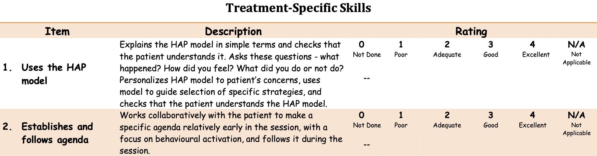
The key reliability issue is to establish that the observers are consistent raters. For instance, when listening to the same session, do different observers see and record the same things? If yes, they are reliable observers and can be trusted to rate sessions independently, increasing the number of sessions a team can rate.
Remember, reliability is not the same thing as validity. Whether the Q-HAP is a valid measure of therapy quality is a different question. The Q-HAP developers do not really engage with this question, writing, “Regarding validity, however, because scales were derived from instruments which are used by other psychological treatment researchers worldwide, we have assumed that they possess a degree of validity by extension.”
Singla et al. (2014) quantified inter-rater reliability with the intra-class correlation coefficient, or ICC. The ICC is an index of how much of the variability in the measurements is due to true differences between subjects/items and how much is due to disagreement among raters. There are 10 different forms of ICC (McGraw et al., 1996), and it’s important to pick the right one for your purpose.
Singla et al. (2014) calculated ICC(2,3). ICC(2,3) is used to assess the reliability and consistency of measurements made by multiple observers on multiple subjects/items. It is often employed when the raters are selected randomly from a larger pool, and each subject or item is assessed by different combinations of these raters. ICC values can range from 0 to 1, where values closer to 1 indicate high agreement.
Singla et al. (2014) reported that the peer observers had moderate agreement on the Q-HAP treatment specific subscale (ICC(2,3) = .616, N = 97) and the general skills sub scale (ICC(2,3) = .622, N = 189). The results for expert observers were similar.
Construct Validation Phase 3: External
The final phase of developing a new instrument is to evaluate how it performs against external criteria or in relation to existing tools. Two main buckets of validity in this phase are construct validity and criterion validity.
Construct validity
Construct validity is a framework for evaluating whether an instrument measures the intended theoretical construct. Let’s review several types of construct validity, including convergent, discriminant, and known groups.
Construct: Convergent and discriminant validity
Psychologists in particular like to think about nomological validity and talk in terms of convergent and discriminant validity. Establishing evidence for nomological validity means showing that your new instrument is positively correlated with theoretically related constructs (convergent validity) and uncorrelated (or only weakly correlated) with theoretically unrelated constricts (discriminant validity).
‘Nomological’ from the Greek ‘nomos’ meaning ‘law’. The nomological network is the theoretical map of how different constructs are related. For instance, in a nomological network about mental health, depression and anxiety are distinct disorders but have theoretical overlap and are often comorbid.
For instance, a measure of depression should not be strongly associated with a measure of narcissism because we don’t consider depression and narcissism to be theoretically linked. But we would expect a measure of depression to be associated to some degree with a measure of anxiety because they are often co-morbid, meaning that people with depression symptoms also commonly report symptoms of anxiety.
In practice, when developing or adapting an instrument, you should design a validation study that includes measures of conceptually related and unrelated constructs so you can evaluate if the correlations are as predicted. If not, you have more work ahead.
Construct: Known groups validity
Another method for establishing evidence of construct validity is via known groups validity. With known groups validity you examine whether your instrument distinguishes between groups of people who are already known to differ on the construct of interest. For example, if you were developing a new measure of family conflict, you could recruit families who have been referred for services and a comparison group of families who have not been referred, administer your new questionnaire to both groups, and compare the group-level results. Known groups validity would predict that referred families would score higher on average on your measure of family distress compared to families not referred for support. See Puffer et al. (2021) for this approach to recruitment (but not analysis).
Known groups validity is similar to diagnostic accuracy, discussed below as a type of criterion validity. A key difference is that diagnostic accuracy involves analyzing classification predictions for individuals whereas known groups methods look at differences in group averages.
Criterion validity
Criterion validity assesses how well an instrument relates to an external criterion or a gold standard. There are three main types of criterion validity: concurrent validity, predictive validity, and diagnostic accuracy.
Criterion: Concurrent validity
Concurrent validity examines the relationship between the new instrument and some criterion that is assessed at the same time. For example, Beck et al. (1988) reviewed 35 studies that compared BDI scores to four existing measures of depression and reported strong, positive correlations.
Concurrent and convergent validity are similar. They both involve comparing the new instrument to other instruments measured at the same time. Concurrent compares to an existing gold standard measure of the same construct, while convergent compares to measures of related constructs. We’re splitting hairs in my view.
Criterion: Predictive validity
Predictive validity assesses how well an instrument predicts future outcomes or behaviors. A common application is evaluating the utility of a new hiring test to identify job candidates most likely to succeed in a particular role. A test has good predictive ability if the results correlate with job performance measured at a later time.
Criterion: Diagnostic accuracy
Diagnostic accuracy refers to the ability of an instrument to correctly identify individuals with or without a particular condition or disease. The new instrument under investigation is referred to as the index test, and the existing gold standard test is known as the criterion. For instance, if you are developing a new rapid diagnostic test for a bacterial infection that returns results in minutes, your rapid test would be the index test and the bacteria culture test would be the criterion or the gold standard.
Returning to an earlier example, Green et al. (2018) developed a new perinatal depression screening questionnaire in Kenya—the Perinatal Depression Screening (PDEPS)—and evaluated its diagnostic accuracy by comparing PDEPS scores (the index test) to the results of separate clinical interviews conducted by Kenyan counselors (gold standard) who were blind to women’s questionnaire data. In this study, 193 pregnant and postpartum women completed the new screening questionnaire and separately participated in a clinical interview within three days. Clinical interviewers identified 10/193 women who met diagnostic criteria for Major Depressive Episode.
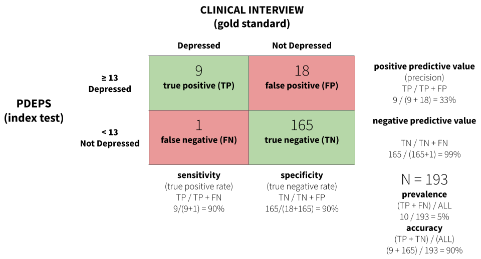
Figure 5.19 displays a confusion matrix for the study. The analysis found that a score of 13 or greater on the PDEPS correctly identified 90% of true cases. It only missed 1 out of 10 cases. This is known as sensitivity or the true positive rate. This cutoff on the PDEPS also correctly identified 90% of non-cases. This is known as specificity or the true negative rate. A score of 13 is the optimal cutoff that maximizes sensitivity and specificity.
For some applications or in certain settings you might choose to prioritize sensitivity over specificity, or vice versa. For instance, if false negatives are very costly for individuals and society, you might choose a cutoff that favors high sensitivity.
CROSS-CULTURAL VALIDITY
If you are not yet ready to agree with my opening statement that “measurement is one of the hardest parts of science”, please allow me to tell you what else you need to consider if you wish to develop or adapt instruments for use in cross-cultural contexts.
Kohrt et al. (2011) is a fantastic guide for our discussion. This paper is motivated by the fact that there are few culturally adapted and validated instruments for assessing child mental health in low-income settings. This lack of instruments is a barrier to designing, delivering, and assessing services for children and families. To remedy this situation, the authors propose six criteria for evaluating the cross-cultural validity of instruments that are applicable to any topic.
- What is the purpose of the instrument?
- What is the construct to be measured?
- What are the contents of the construct?
- What are the idioms used to identify psychological symptoms and behaviors?
- How should questions and responses be structured?
- What does a score on the instrument mean?
What is the purpose of the instrument?
The authors start by reminding us that validity is not an inherent property of an instrument, adding that validity can vary by setting, population, and purpose. The last point is often overlooked. It’s important to design instruments to be fit for purpose. If your objective is to measure the efficacy of an intervention, let’s say, adapting an instrument validated for measuring the prevalence of disease may not be ideal. Start by defining your purpose.
What is the construct to be measured?
We covered this question about construct validity extensively in the previous section, but it’s worth noting the authors’ distinction between three different types of constructs: (i) local constructs, (ii) Western psychiatric constructs; and (iii) cross-cultural constructs.
In their formulation, local constructs are the unique ways that the target population conceptualizes an issue. For instance, in the perinatal depression study mentioned earlier (Green et al., 2018), a local construct that emerged in focus group discussions was that women experiencing depression often feel like they just want to go back to their maternal home.7 This is not a characteristic of depression that you will find in any commonly used screening instruments, but it has relevance to this population.
Local constructs are also known as idioms of distress or culture-bound syndromes.
Western psychiatric constructs—which for our purposes we’ll recast more broadly as standard global health indicators—have their origin outside of the target population and may or may not be relevant. Kohrt et al. (2011) give the example of posttraumatic stress disorder as a Western construct with no perfectly synonymous concepts in Nepal. In contrast, cross-cultural constructs are universally recognized phenomena with some degree of shared meaning across settings and cultural groups.
What are the contents of the construct?
Answering this question about content validity requires a close inspection of the instrument’s elements for relevancy. For instance, Kohrt et al. (2011) found that a common item on ADHD screening instruments in high-income countries, “stands quietly when in line”, is not applicable in Nepal because this behavior is not a universal expectation of children. Thus it’s not a sign of hyperactivity in this context and should not be included in a screening instrument.
Whether you are creating a new instrument or adapting an existing measure, a few rounds of qualitative research will help you to explore which elements like this should be included or dropped. See the previous example linked to Figure 5.14.
What are the idioms used to identify psychological symptoms and behaviors?
Once you know what domains an instrument should assess, it’s important to get the language right. Translation is never sufficient for establishing validity, but it’s a critical piece of the process.
A standard recommendation is to conduct forward translation, blinded back translation, and reconciliation. In this approach, a translator fluent in both languages translates the items from the original language to the target language. Next, a new linguist translates the target language product back to the original language, but does so blinded, without seeing the original text. In the final step, the translators work together to compare the original text and the back-translated text, resolve disagreements, and improve the translations to ensure semantic equivalence.
How should questions and responses be structured?
Another important consideration is technical equivalence, or ensuring that the possible response sets are understood in the same way across groups or settings. For instance, if adapting an instrument that asks people to respond on a 4-point scale—never, rarely, sometimes, often—it’s helpful to verify that this format is understood by the target population once translated. Cognitive interviewing is a good approach.
What does a score on the instrument mean?
This final question comes up in the external phase of construct validation that we discussed previously. There is not much more to say here, but Kohrt et al. (2011) make a point about the lack of criterion validation that bears repeating for anyone interested in conducting a prevalence study:
Ultimately, for prevalence studies, diagnostic validation is crucial. The misapplication of instruments that have not undergone diagnostic validation to make prevalence claims is one of the most common errors in global mental health research.
THREATS TO CONSTRUCT VALIDITY
Shadish et al. (2002) outlined 14 threats to construct validity that are presented in Table 5.6. See Matthay et al. (2020) for a translation of these threats to DAGs. I find that I often return to this list when designing a new study to consider whether there are threats lurking in my measurement strategy.
| Threat Name | Definition |
|---|---|
| Inadequate explication of constructs | Failure to adequately explicate a construct may lead to incorrect inferences about the causal relationship of interest. |
| Construct confounding | Exposures or treatments usually involve more than one construct, and failure to describe all the constructs may result in incomplete construct inference. |
| Confounding constructs with levels of constructs | Inferences made about the constructs in a study fail to respect the limited range of the construct that was actually studied, i.e., effect estimates are extrapolated beyond the range of the observed data. |
| Mono-operation bias | Any one operationalization (measurement or intervention implementation) of a construct both underrepresents the construct of interest and measures irrelevant constructs, complicating the attribution of observed effects. |
| Mono-method bias | When all operationalizations (measurements or intervention implementations) use the same method (e.g., selfreport), that method is part of the construct actually studied. |
| Treatment sensitive factorial structure | The structure of a measure may change as result of treatment. This change may be hidden if the same scoring is always used. |
| Reactive self-report changes | Self-reports can be affected by participant motivation to be in a treatment condition. This motivation may change after assignment is made. |
| Compensatory equalization | When treatment provides desirable goods or services, administrators, staff, or constituents may provide compensatory goods or services to those not receiving treatment. This action must then be included as part of the treatment construct description. |
| Compensatory rivalry | Participants not receiving treatment may be motivated to show they can do as well as those receiving treatment. This action must then be included as part of the treatment construct description. |
| Resentful demoralization | Participants not receiving a desirable treatment may be so resentful or demoralized that they may respond more negatively than otherwise. This response must then be included as part of the treatment construct description. |
| Reactivity to the experimental situation | Participant responses reflect not just treatments and measures but also participants’ perceptions of the experimental situation. These perceptions are part of the treatment construct actually tested. |
| Experimenter expectancies | The experimenter can influence participant responses by conveying expectations about desirable responses. These expectations are part of the treatment construct as actually tested. |
| Novelty and disruption effects | Participants may respond unusually well to a novel innovation or unusually poorly to one that disrupts their routine. This response must then be included as part of the treatment construct description. |
| Treatment diffusion | Participants may receive services from a condition to which they were not assigned, making construct descriptions of both conditions more difficult. |
5.6 Measurement, Schmeasurement
Two Psychologists, Four Beers, Episode 32, Measurement Schmeasurement.
“Measurement, Schmeasurement” is the title of a great paper by Flake et al. (2020). The subtitle is, “Questionable Measurement Practices and How to Avoid Them”. The authors’ thesis is that measurement is a critical part of science, but questionable measurement practices undermine the validity of many studies and ultimately slow the progress of science. They define questionable measurement practices as:
decisions researchers make that raise doubts about the validity of measure use in a study, and ultimately the study’s final conclusions.
These decisions, they argue, stem from ignorance, negligence, and in some cases misrepresentation. According to Flake et al. (2020), questionable measurement practices live on because many researchers have an attitude of, “measurement, schmeasurement”. In other words, who cares.
If you are not a native English speaker, measurement, schmeasurement might be a confusing phrase. It’s an example of shm-reduplication used to indicate lack of interest or derision. Science, schmiance. See ghr.link/shm for more examples.
I’m persuaded by this argument, having been in the room when investigators have spent weeks thinking about research design only to uncritically “throw in” a bunch of measures at the end. The thinking is often, why not, we’re going to the trouble of doing the study, let’s measure everything. Sometimes a student or colleague needs a project, and they’re invited to add something to the survey battery. In situations like this, the validity of measurement is never at the forefront. Doing it right is hard, and hey, measurement, schmeasurement, right?
Flake et al. (2020) believe that fixing this problem begins with greater transparency and better reporting about measurement decisions. They also offer six questions to consider in the design phase and to report in publications:
- What is your construct?
- Why and how did you select your measure?
- What measure did you use to operationalize the construct?
- How did you quantify your measure?
- Did you modify the scale? And if so, how and why?
- Did you create a measure on the fly? If so, justify your decision and report all measurement details for the new measure along with any validity evidence.
If you ask and answer these questions for your next study, I’m convinced that you will improve your measurement strategy and thus strengthen the validity of your conclusions.
This is true in many other nations as well.↩︎
The coding is designed to match the International Classification of Diseases (ICD-10) coding system.↩︎
This is not bad considering these are global estimates!↩︎
The authors don’t indicate this in their manuscript.↩︎
Non-compliance is not limited to designs with a treatment group and a control group. It also applies to studies comparing two active treatments.↩︎
Patel et al. (2017) excluded one item about sex for cultural reasons, so they used a modified BDI-II with 20 of the 21 questions.↩︎
It’s customary for women in this culture to marry and live with her husband’s family.↩︎